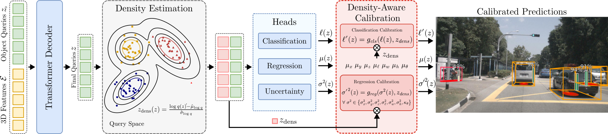

Reliable uncertainty estimation for 3D object detection is critical for deploying safe autonomous systems, yet modern detectors remain poorly calibrated, especially under distribution shifts. Although post-hoc calibration methods address this issue and provide improved calibration for in-distribution tests, they fail to adapt in distribution-shifted scenarios.
In this work, we address this issue and introduce a density-aware calibration method that couples post-hoc calibrators with the feature density of latent object queries from DETR-style 3D object detectors. These queries form a compact, location and class-aware feature, ideal for density estimation, allowing our approach to adjust model confidences in distribution-shift scenarios.
By fitting a density estimator on these query features, our approach jointly recalibrates both classification and bounding box regression uncertainties. On both a multi-view camera and LiDAR-based detector, our approach consistently outperforms standard post-hoc methods in both in-distribution and distribution-shifted scenarios.
To introduce robust regression and classification calibration for DETR-style 3D object detectors, we propose to couple feature density-based uncertainty quantification with post-hoc calibration. We establish an uncertainty evaluation framework tailored for nuScenes, introducing metrics that assess both classification and regression uncertainties. Our approach outperforms established baselines for in-distribution and distribution-shifted scenarios.

From 3D sensor data (either multi-view camera or point cloud), our method first extracts features using standard backbones and applies positional encodings to retain spatial information. Following DETR-style 3D detector pipelines, we interpret these features as tokens () and feed them into our probabilistic decoder-only transformer, where they interact with a set of learnable object queries \(z_0\) (). The decoder outputs refined queries \(z\) (), which are then used to predict class scores, mean box parameters, and associated variances using separate detection heads (), obtaining boxes in the form of \(\mathbf{b}=(\hat{x},\hat{y},\hat{z},\hat{\ell},\hat{w},\hat{h},\hat{\theta},\hat{v}_x,\hat{v}_y,\sigma_x^2,\sigma_y^2,\sigma_z^2,\sigma_{\ell}^2,\sigma_w^2,\sigma_h^2,\kappa_\theta)\). Simultaneously, we use an epistemic density estimation module that models how well the final object queries align with True Positive queries from the training set. At test time, we compute the density of each object query feature () and use this information to dynamically calibrate both the classification and regression uncertainties in our density-aware post-hoc calibration module (). For our experiments, we build upon the DETR-style 3D detector PETR, which processes multi-view camera images. To further validate our approach, we use a LiDAR-based detector and a SECOND point cloud encoder instead of the camera-based encoder while keeping the rest of the architecture unchanged.
TBD